-
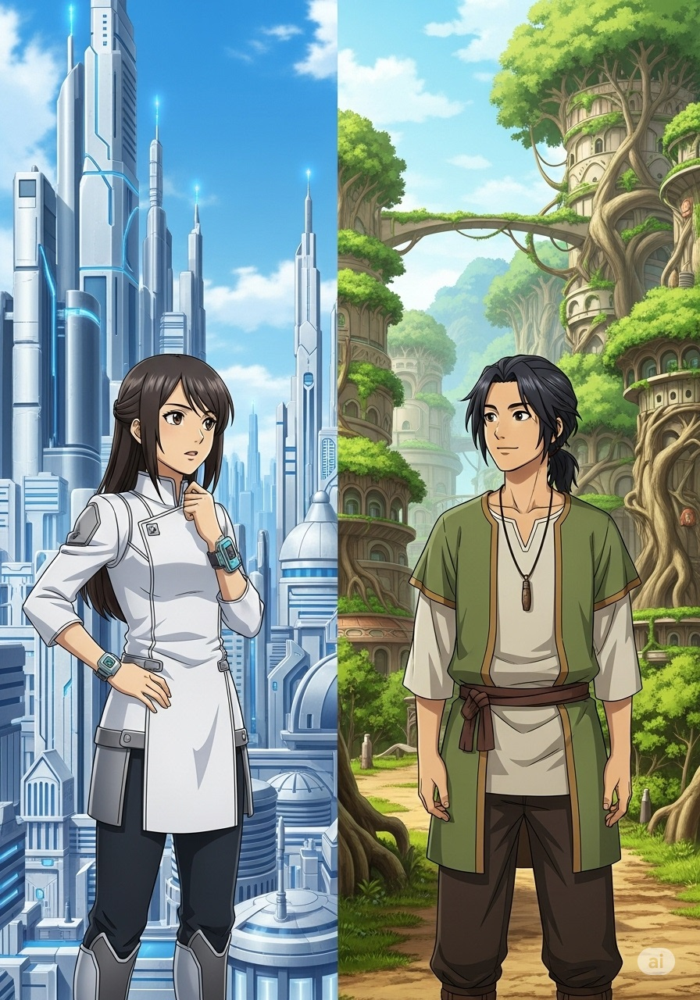
Rina and the Whispering Valley
Written by Panagiotis Domvros
-
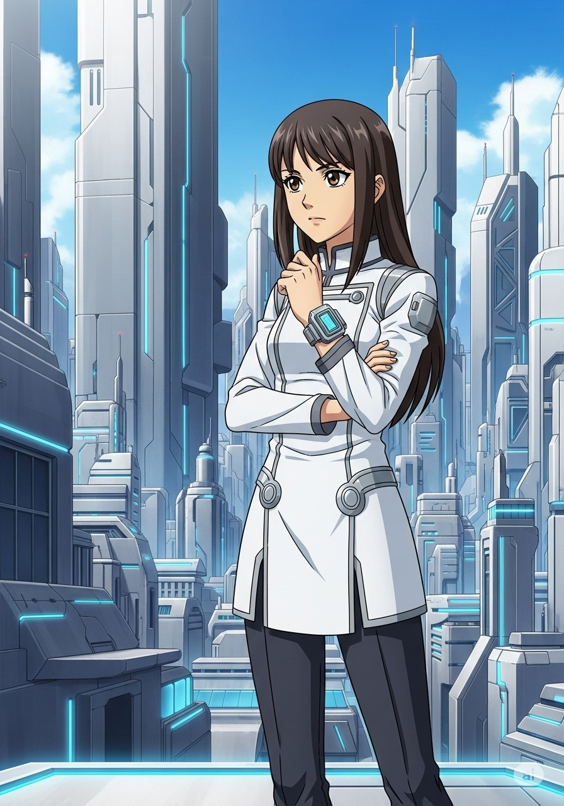
In the gleaming city of Chromia, where every building sparkled with efficiency and every thought was perfectly logical, lived a bright young student named Rina. She believed that the Chromian way was the only way.
-
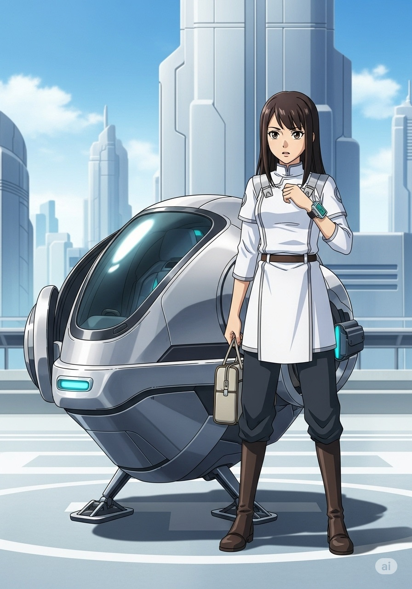
One day, Rina was chosen for an exchange programme to the mysterious Veridian Valley, a place known for its ancient traditions and deep connection to nature. Rina packed her bags, a little sceptical but curious.
-
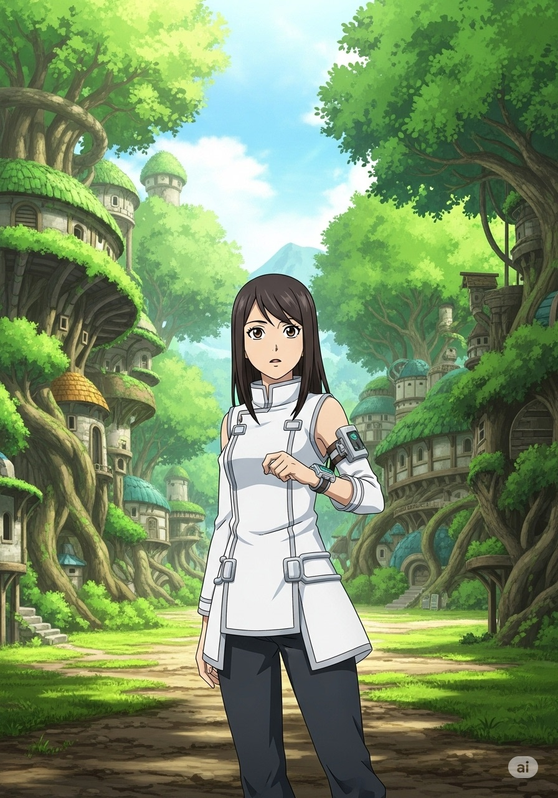
When Rina arrived, Veridian Valley was unlike anything she had ever seen. Buildings were woven from living trees, and people moved with a gentle, unhurried rhythm. It felt… slow.
-
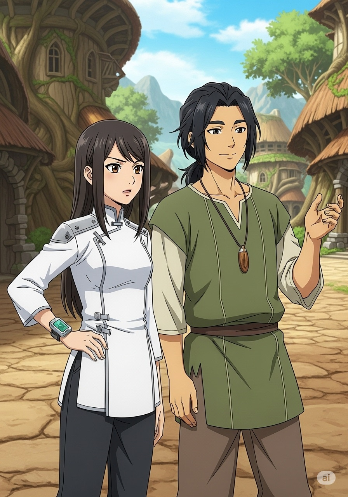
She met Taro, a kind young man with eyes as deep as the forest. He tried to explain their customs, like the morning 'Sun-Greeting Dance' or the 'Whispering Wind Festival'. Rina just nodded, thinking, "Why don't they just use a calendar app?"
-
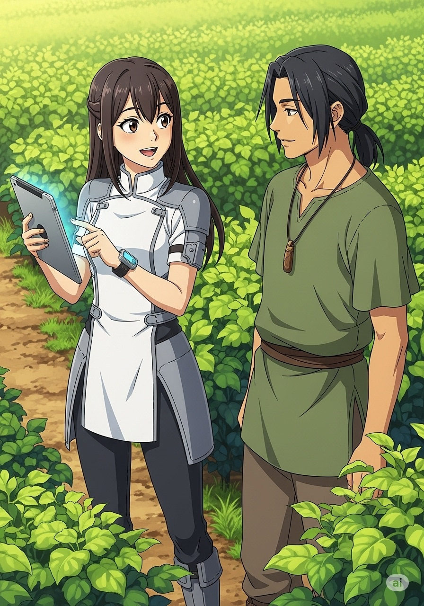
Rina tried to introduce Chromian efficiency. She suggested automated irrigation for their crops instead of their careful, hand-watered methods. "It's just faster!" she exclaimed. Taro simply smiled, "Faster isn't always better, Rina. The plants tell us what they need."
-
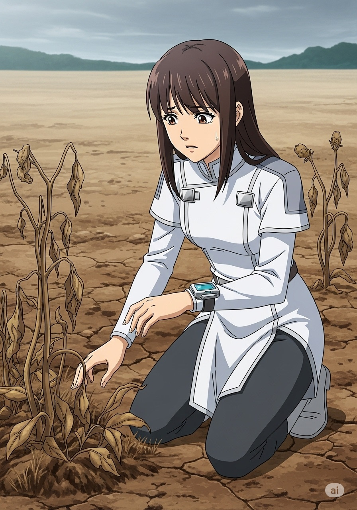
Then, a great drought struck. The Chromian automated systems Rina had tried to implement failed. The plants withered, and the valley grew worried. Rina felt helpless.
-
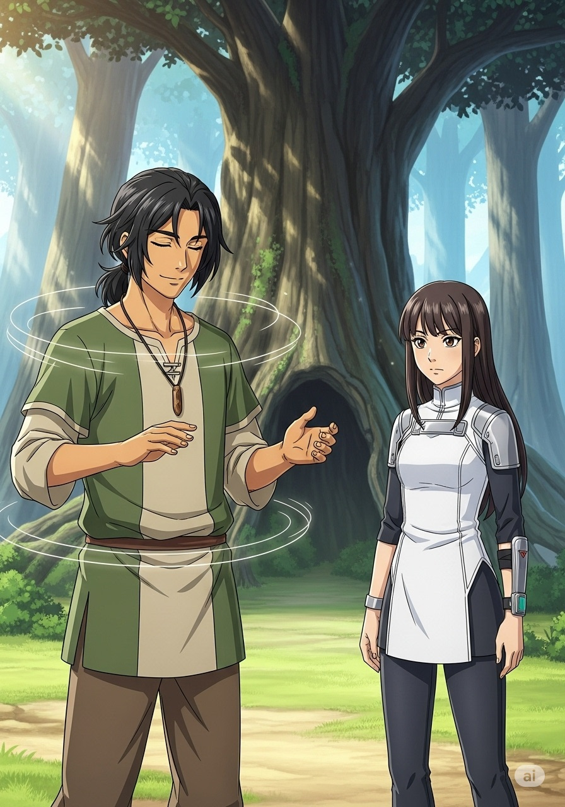
Taro and the elders began their ancient 'Rain-Calling Ritual'. It involved intricate songs, rhythmic drumming, and a deep connection to the land. Rina watched, at first dismissive, then intrigued by their unwavering faith.
-
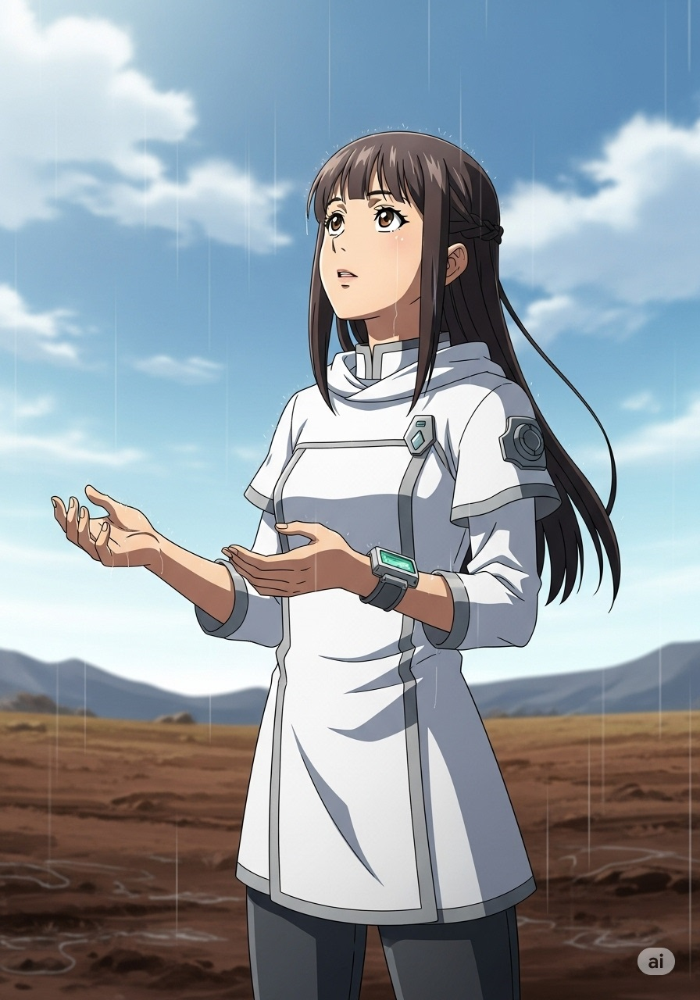
Slowly, miraculously, tiny droplets began to fall. The ritual had worked! Rina saw the joy and relief on everyone's faces. It wasn't about logic; it was about understanding, respect, and harmony.
-
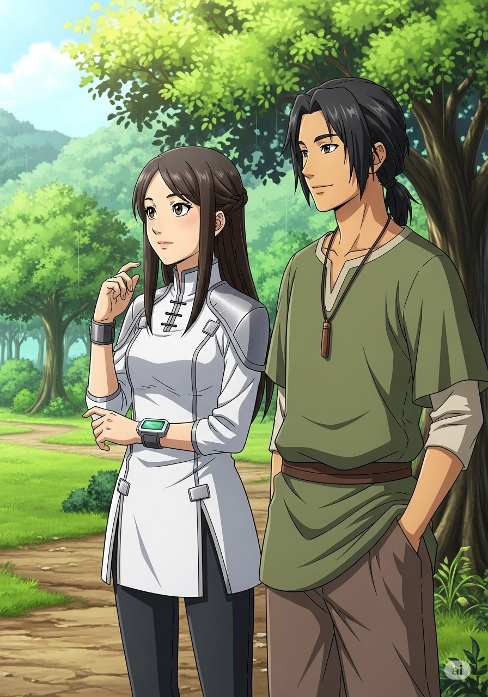
Rina realised that true strength came from embracing all ways of knowing. The Chromian way was good for some things, but the Veridian way held wisdom her city had forgotten. She had learned to look beyond her own understanding.
-
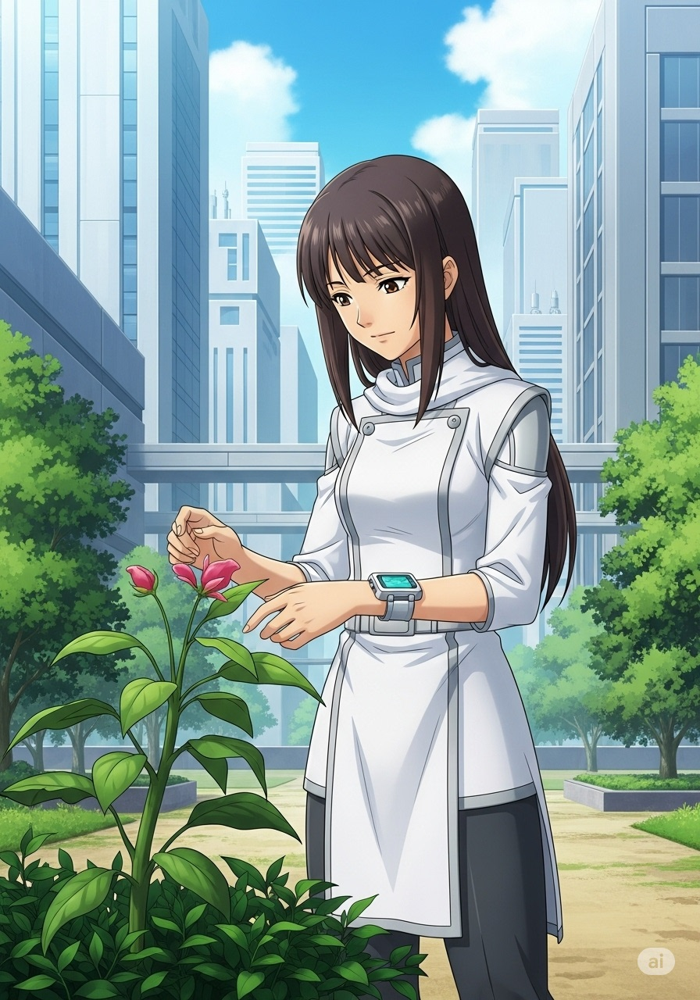
When Rina returned to Chromia, she shared her stories not of efficiency, but of respect, understanding, and the beautiful tapestry of human experience. She knew that different was not wrong, just different, and that was a wonderful thing.
Reading Comprehension
1. What did Rina initially believe about the Chromian way?
2. Veridian Valley is known for its connection to what?
3. What did Rina suggest for irrigating crops?
4. Who performed the Rain-Calling Ritual?
True or False
1. Rina was initially sceptical of the Veridian Valley traditions.
2. The Chromian automated systems saved the valley from drought.
3. The Rain-Calling Ritual involved intricate songs and drumming.
4. Rina returned to Chromia with a respect for different ways of knowing.
Vocabulary Matching
Match each word with its definition: